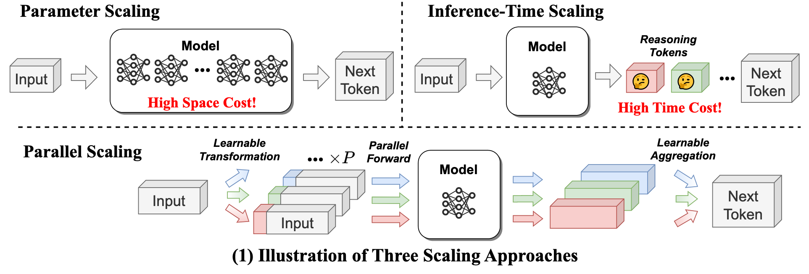
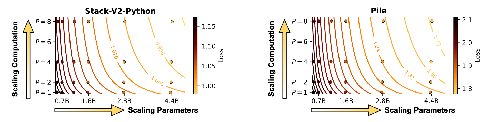
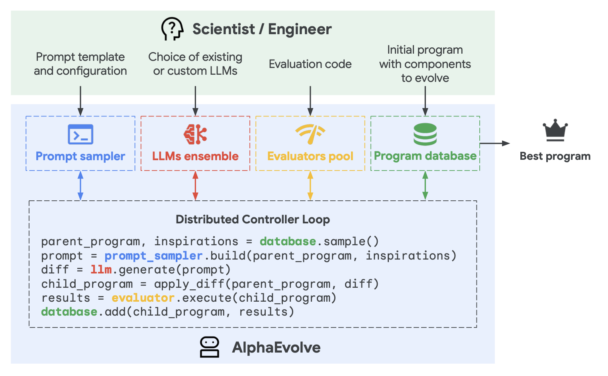
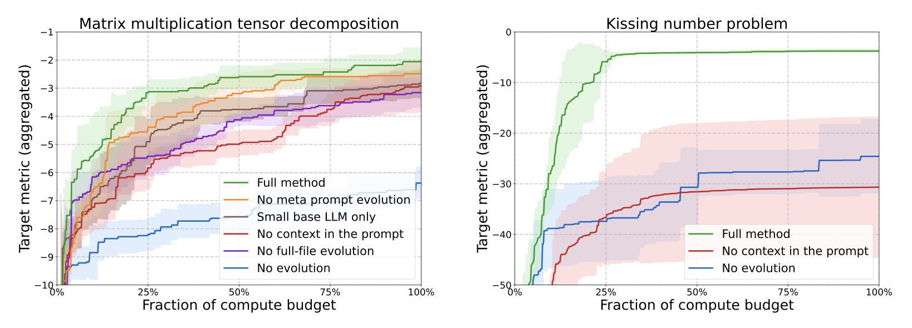
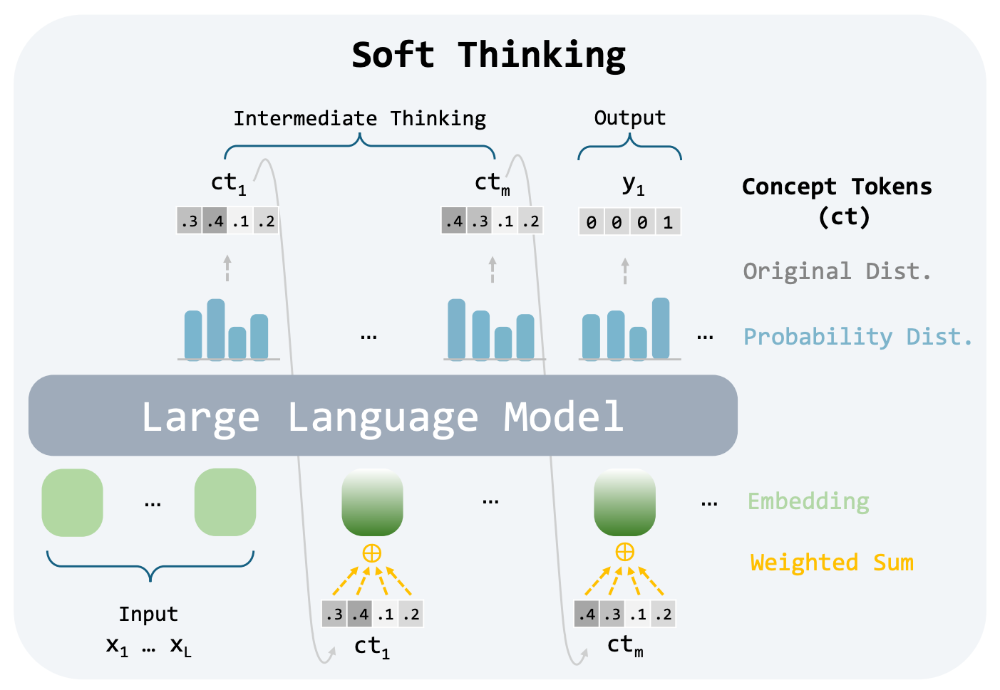
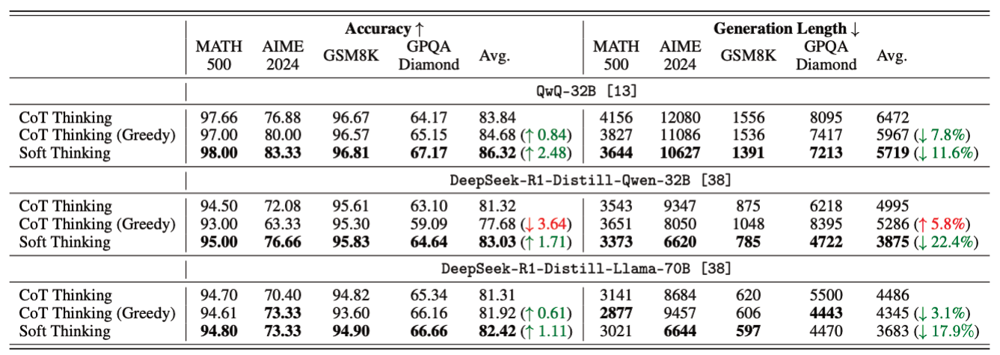
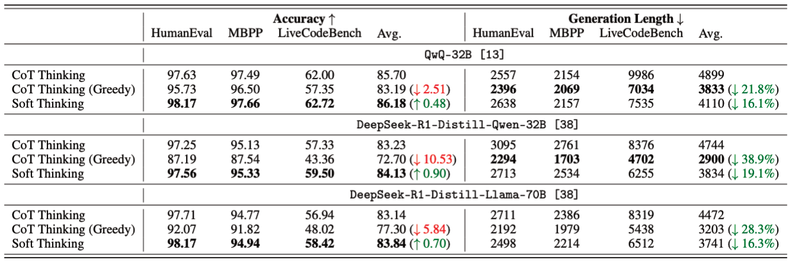
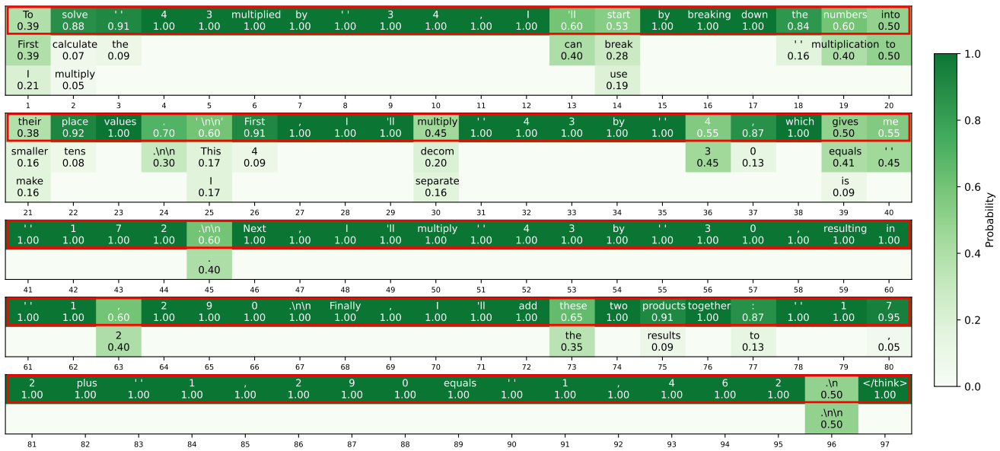
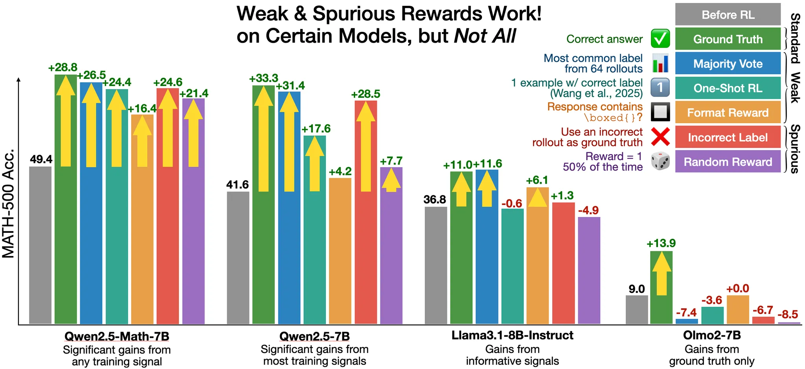

May Papers: Parallel scaling, Evolving code, Understanding LLM reasoning
Hurtling past the NeurIPS submission deadline into the summer months, we switch from huddling around server rooms to keep warm to babysitting experiments whilst basking in the sun. We've had a bumper month of papers to sift through and once again we offer summaries of a few of our favourites.
First, Parallel Scaling Laws for Language Models proposes a novel method of scaling compute with language models inspired by classifier-free guidance that finetunes a model to run multiple forward passes with different learned vector prefixes. We also looked into AlphaEvolve, an evolutionary algorithm from Google DeepMind that generates and refine prompts for Gemini that can advance the state-of-the-art in algorithm design.
Since it has been a particularly exciting month for contributions on LLM reasoning, we picked two papers to dive into deeper. In Soft Thinking the authors attempt to improve on prior work sampling continuous token embeddings rather than discrete tokens during reasoning phases of text generation. Finally, in Spurious Rewards they find that even rewarding random answers can improve reasoning ability, potentially forcing us to reconsider how we understand post-training techniques to improve the use of test-time compute.
We hope you enjoy this month's papers as much as we did! If you have thoughts or questions, please reach out to us at @GCResearchTeam.
Parallel Scaling Laws for Language Models
The key idea
Researches at Qwen introduce a new dimension of scaling: parallel forward passes. Their method, PARSCALE, runs \(P\) parallel copies of a model, each with a different learned prefix. They find that running \(P\) parallel passes is equivalent to scaling the model parameters by \(O(\log P)\).

Background
The approach comes from a practical inference bottleneck: for large models, single batch inference can be memory-bound, especially on resource constrained edge devices. Rather than increasing model size or generating more reasoning steps, PARSCALE aims to scale a new axis, parallel computation, to keep model size approximately constant while improving performance.
Inspired by techniques like Classifier-Free Guidance (CFG), PARSCALE hypothesizes:
Scaling parallel computation (while maintaining the nearly constant parameters) enhances the model’s capability, with similar effects as scaling parameters.
Methodology
PARSCALE executes \(P\) forward passes in parallel, each conditioned with a unique learned prefix (implemented via prefix tuning). Outputs of the different streams are combined using a learned aggregation MLP.
Unlike inference-time tricks (e.g., beam search or self-consistency), PARSCALE learns the aggregation during training, leading to more effective use of parallel compute. Conceptually this is similar to ensembling, but with almost complete parameter sharing between the members.
Training Strategy
To reduce training costs, they propose a two-stage approach:
- Stage 1: Standard pre-training (1T tokens)
- Stage 2: Add PARSCALE (20B tokens, 2% overhead)
Dramatically reduces cost of parallel scaling training (which requires \(P\) forward passes) only applied to the final 20B tokens, not the full 1T.
Results

Coding Tasks (Stack-V2-Python)
| Model Params | P | HumanEval+ (%) |
|---|---|---|
| 1.6B | 1 | 33.9 |
| 1.6B | 8 | 39.1 |
| 4.4B | 1 | 39.2 |
General Tasks (Pile)
| Model Params | P | Avg Score (%) |
|---|---|---|
| 1.6B | 1 | 53.1 |
| 1.6B | 8 | 55.7 |
| 2.8B | 1 | 55.2 |
For a 1.6B model, scaling to \(P=8\) parallel streams achieves performance comparable with a 4.4B model on coding tasks. These efficiency gains are most pronounced at small batch sizes (\(\leq 8\)) where inference is memory-bound. This makes PARSCALE most suitable for edge deployment scenarios.
- 22x less memory increase compared to parameter scaling.
- 6x lower latency.
- 8x increase (linear with \(P\)) KV cache size.
Dynamic Parallel Scaling
PARSCALE remains effective with frozen main parameters for different values of P. This enables dynamic parallel scaling: switching P to dynamically adapt model capabilities during inference.
Takeaways
PARSCALE provides a new axis in which to boost model capability, particuarly in resource constrained single-batch inference. However KV cache grows linearly with the number of parallel streams (\(P\)) so effectiveness may diminish beyond \(P=8\) (the largest tested configuration). It is an open question as to whether \(O(\log P)\) scaling holds for \(P ≫ 8\).
AlphaEvolve: A coding agent for scientific and algorithmic discovery
AlphaEvolve, evolves (no pun intended) the seminal method FunSearch introduced in late 2023. Powered by a frontier model rather than a smaller LLM, it leverages evolutionary algorithms to successively prompt Gemini to finding novel solutions with respect to a multi-objective target. The results are quite compelling, improving upon various mathematical results relating to matrix multiplication and even reducing Google Cloud's costs with 0.7%. This is a staggering saving considering the scale of Google.
The key idea
AlphaEvolve’s workflow begins with an initial program and an automated evaluation function. Marked code blocks are evolved through LLM-proposed diffs, evaluated for quality, and selectively retained in a program database. Prompts are assembled from high-performing ancestors and injected with stochastic formatting, context, and feedback.
The use of powerful Gemini 2.0 models (Flash for speed, Pro for breakthroughs) ensures a mix of exploration and high-quality suggestions. The evolution loop is fully asynchronous and can evaluate expensive programs in parallel. AlphaEvolve can optimize for multiple metrics and adapt across abstraction levels: from evolving functions to full search algorithms.
By exploiting the capacity of LLMs and engineering a feedback loop, it can effectively help Gemini to act as an "arbitrary" format optimiser for very vague tasks, as long as the problem can be expressed in some form of syntax paired with an evaluation criteria.

Their method
AlphaEvolve works by evolving full programs through an LLM-driven, feedback-grounded loop. Candidate solutions are generated as diffs from existing programs, scored via an automated evaluation function, and stored in a database to seed further generations. It supports evolving entire files across multiple languages and can simultaneously optimize for multiple metrics.
To understand what makes AlphaEvolve effective, the authors performed ablation studies on two tasks: matrix multiplication and the kissing number problem. The key findings:
-
No evolution: Removing the evolutionary loop (i.e., re-prompting the initial program) significantly degrades performance.
-
No context: Stripping rich context from prompts leads to worse solutions, confirming that prompt engineering matters.
-
Small LLMs only: Using only lightweight models reduces result quality. Strong base models like Gemini Pro make a difference.
-
No full-file evolution: Restricting changes to a single function (vs. whole files) limits AlphaEvolve’s power and flexibility.
-
No meta-prompt evolution : Removing the co-evolution of prompts results in slower progress, showing prompt quality co-evolution is a key driver.
Together, these ablations show that AlphaEvolve’s strength comes from multiple interacting components; especially full-code evolution, high-quality LLMs, and contextual prompting.

Results
AlphaEvolve discovered a new algorithm to multiply 4×4 complex matrices using 48 scalar multiplications—beating Strassen’s 49 from 1969. It improved tensor decomposition methods for matrix multiplication, set new state-of-the-art results on the Erdős minimum overlap and kissing number problems, and evolved efficient scheduling heuristics that saved 0.7% of Google’s data center compute.
They further demonstrated that AlphaEvolve also able to carry out assembly level code to optimise kernels for Gemini's attention layer, yielding a 23% performance improvement, with a 1% decrease in wall time.
Takeaways
Some observations here is that frontier models can evidently be used as "general-purpose" optimisers assuming a well engineered feedback loop. This can likely be generalised to a product using an arbitrary frontier model, and may possibly add another venue for the agentic-LLM community to explore.
Soft Thinking: Unlocking the Reasoning Potential of LLMs in Continuous Concept Space
The key idea
Conventional reasoning models generate long reasoning traces, which are typically constrained to the expressivity of the model's vocabulary. The discretisation of reasoning makes it hard to explore multiple paths or ideas, and limits the model's ability to "think" about abstract concepts, as it is always forced to express its thoughts in natural language.
Recent works have looked into latent thoughts, such as Coconut and Latent Reasoning, in which the thoughts are not necessarily discretised tokens, but rather continuous tokens in some latent space. However, training these methods is non-trivial and scaling model size can be very challenging.
In Soft Thinking, the authors propose a training-free approach to latent reasoning, in which the "concept tokens" are a probability-weighted mixture of the token embeddings.

Their method
Typically, reasoning models employ standard LLM inference techniques for generating their reasoning traces: each forward pass \(i\) generates a probability distribution over the vocabulary, from which a token \(t_i\) is sampled from. This token is then embedded using the embedding matrix \(\mathbf{E}\) and injected into the model's input.
Mathematically, this can be expressed as
such that
where \(p_i\) is the probability distribution for the \(i\)th forward pass, and \(\mathrm{LLM}\) is the model.
The sampling operation of LLM inference discretises the model's output, limiting its expressivity. In contrast, Soft Thinking proposes taking a probability-weighted mixture of the input token embeddings, making a so-called concept token. This means the next input token can be expressed as
This approach means that the input embedding layer and output head do not need to be weight-tied, which can cause issues for other continuous reasoning approaches such as Coconut.
As the model no longer injects conventional tokens into the model as part of its reasoning trace, over time the model will be in an out-of-distribution regime. To mitigate this, the authors suggest a cold stop mechanism, which measures the entropy of the concept token, and if it falls below a threshold \(\tau\) for some number of consecutive iterations, then a </think> token is injected into the sequence to terminate the reasoning trace and commence answer generation. This prevents the model from becoming overconfident, and provides a simple stopping condition for the model to exit latent-thought generation.
Results
The authors examine Soft Thinking over a number of mathematical and coding tasks, on three different models: QwQ-32B, DeepSeek-R1-DistillQwen-32B, and DeepSeek-R1-Distill-Llama-70B. They find that across all models and tasks, they see an improvement in task performance, and very often a reduction in sequence length, indicating that Soft Thinking enables richer concepts for a given token.


One concern surrounding latent reasoning is difficulty in interpeting the reasoning trace. While another recent paper questions the validity of traces to the actual reasoning itself, the Soft Thinking authors are still able to generate legible reasoning traces, simply by examining the highest-probability (discrete) token after each forward pass.

Takeaways
Soft Thinking offers a viable way to imbue pre-trained reasoning models with latent reasoning capabilities which permit abstract concepts in a continuous space, without requiring any additional fine-tuning. As their results demonstrate, this offers the opportunity for greater task performance with shorter sequence lengths. While this work doesn't investigate how we can train models to best use the concept space, it does indicate that research in this direction is likely to bear promising results.
Spurious Rewards: Rethinking Training Signals in RLVR
The key idea
The authors (claim to) boost significantly Qwen-Math performance via reinforcement learning (RL) with random, or even spurious, rewards on the MATH-500 benchmark. This hints at models' already possessing reasoning abilities, which the RL procedure "coaxes out", rather than developing.

NB. The baseline evaluations in this paper, and related ones, have been called into question. They suggest an under-reporting of ~15 percentage points (49.4% vs 64.3%) here. This is raised in a short thread on the original post on X. Still, some of the claimed gain is not absorbed by correct baseline evaluation.
With all this in mind, the claims in the current paper (outlined below), and from similar papers, should be taken with a pinch of salt.
Background
Reinforcement Learning with Verifiable Rewards (RLVR) has become a standard approach for enhancing reasoning in LLMs. The conventional wisdom that high-quality supervision signals are essential has been challenged recently, from training on only one example to training without verifiers or sampling more from the base model all improving maths capabilities.
The current paper asks and addresses the question,
"What is a minimum requirement for rewards to provide meaningful RLVR training signals? Do rewards even need to be correctly aligned?"
Their method
RLVR experiments with Qwen2.5-Math-7B, the de facto model that has been widely used by the community for reinforcement learning, were performed using different ground-truth supervision across multiple benchmarks.
Somewhat surprisingly, it is possible to almost match the ground-truth with incorrect or random rewards. This finding directly challenges the prevailing understanding of reinforcement learning's role in improving AI reasoning capabilities.
Results
The MATH-500 benchmark is the focus. The baseline model was tested (no RLVR), alongside four RLVR approaches (including the genuine truth), with results tabulated below.
| Reward | Description | Claim | Adjusted* |
|---|---|---|---|
| Format | reward if contains \boxed{} |
+16.4% | ~0% |
| Random | uniform 0/1-valued reward | +21.4% | ~5% |
| Incorrect | reward only incorrect answers | +24.6% | ~10% |
| Truth | ground-truth reward | +28.8% | ~15% |
*"Adjusted" here is an estimation of the boost after removing ~15%, as mentioned above (and here).
Whilst none of the other options perform as well as RLVR with the true labels, random and incorrect rewards get pretty close. Interestingly, other models analysed (LLaMA 3.2B Instruct and OLMo 2 7B) did not show such gains.
Takeaways
One interpretation is that the model can already reason (fairly well), and that RLVR is more teasing out this capability, rather than improving it. This agrees with the authors' interpretation:
"RLVR with spurious rewards can serve as a mechanism to amplify and surface useful reasoning representations learned during pre-training."
NB. Remember, though, that the baseline evaluations have been seriously questioned. This, in turn, reduces the claimed gains, almost wiping out several of them.